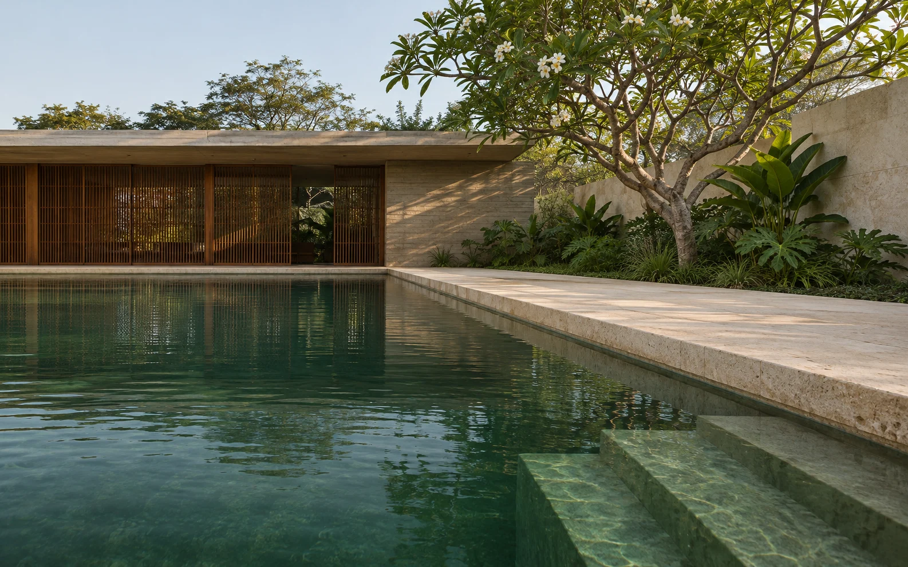

Projeto e construção
Arquitetura, materiais e execução para a piscina que você imagina.
Simular projeto e construção ↗
Do primeiro traço
ao cuidado com a água.

Arquitetura, materiais e execução para a piscina que você imagina.
Simular projeto e construção ↗
Novos revestimentos, bordas e sistemas para a piscina que já existe.
Simular revitalização ↗
Água e equipamentos bem cuidados, em todas as estações.
Simular manutenção ↗